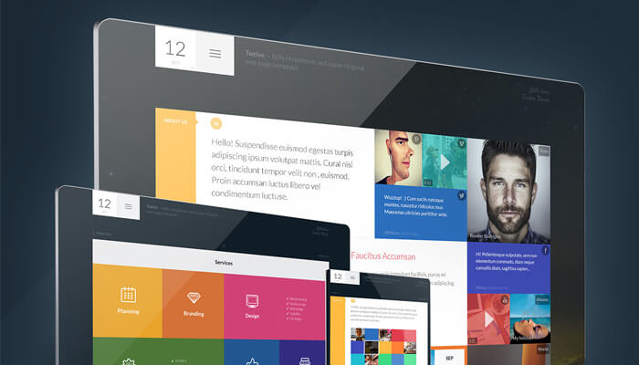
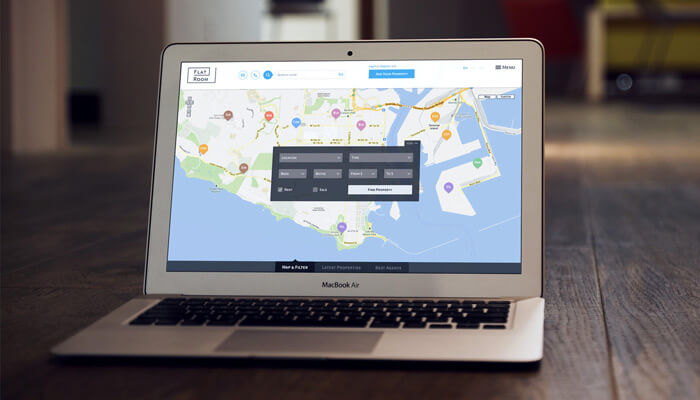
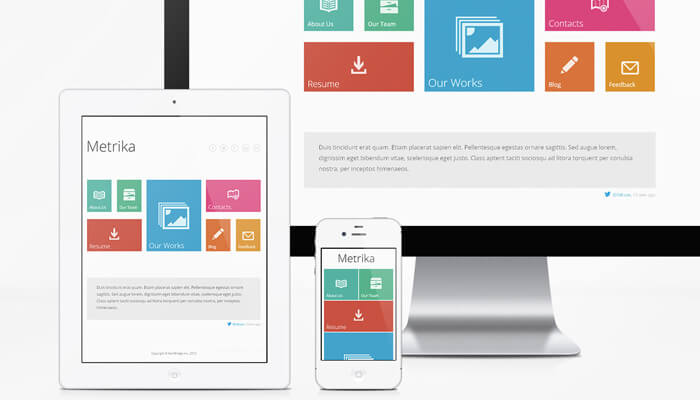
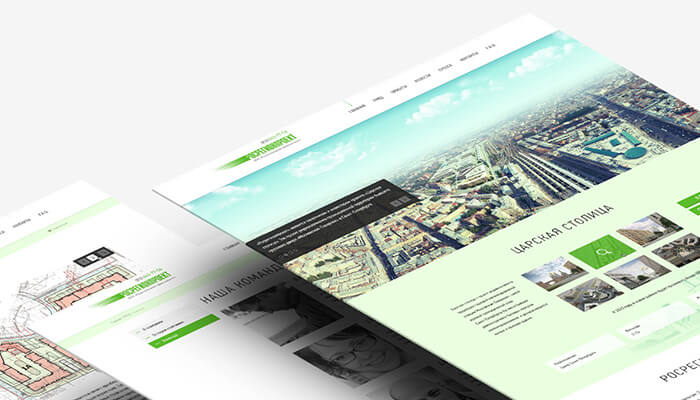
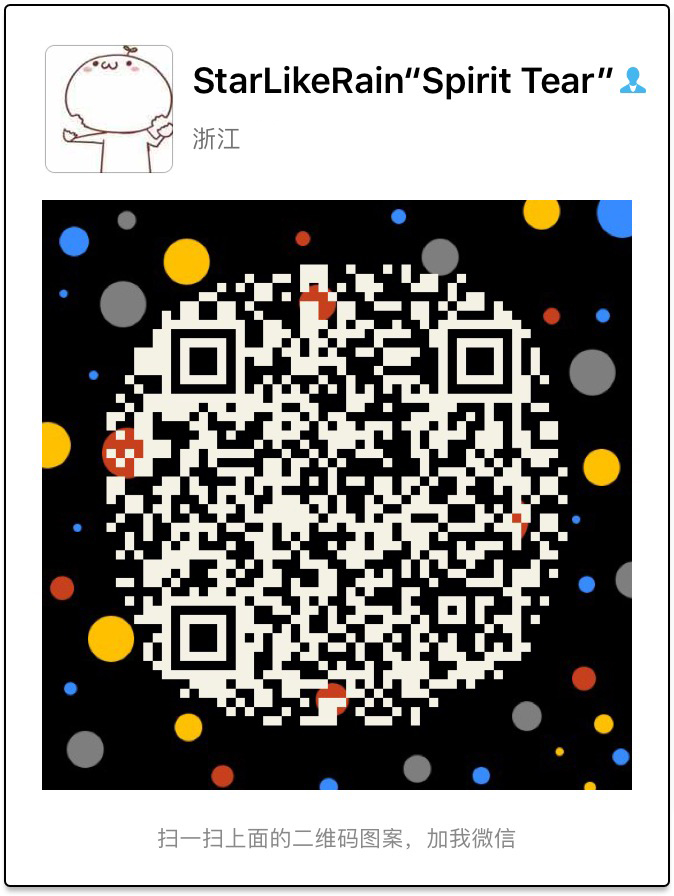

作品
-

点击查看
工作项目：慧聪网登录页改版
真实项目
对登录页改版，功能方面添加了微信扫码登录功能(轮询实现)，以及调整了合作账户登录的内容， 还有添加页面的操作反馈效果，让用户感觉系统是活的，不是呆滞的。 -

点击查看
工作项目：慧聪商务中心首页
慧聪商务中心首页改版
采用了第三方组件，用了E-Charts来辅助实现了额外的可视化效果， 同时考虑了对不同浏览环境的兼容性。 -

点击查看
工作项目：慧聪网应用中心改版
慧聪应用中心改版
实现页面展示，填充页面操作逻辑，实现对不同用户展现各自DIY后的页面排列效果，使用了dragula包， 来丰富用户交互的舒适性。 -

点击查看
Just For Fun😁
音乐播放器
还有3D HOVER效果，看到锤子的商城有鼠标悬浮的好玩的效果，自己也实现一下玩玩。
个人
武汉工商学院——计算机科学与技术（本科）
CET-4
国家云计算高级工程师、国家大数据高级分析师。
- 姓名：彭耀慷
- 目标城市：杭州
- 出生日期：1995年
- 意向职位：前端开发工程师

技能
-
HTML && css
能够编写语义化HTML，模块化CSS，实现较为复杂的布局与动画。熟悉已标准化的HTML5/CSS3新特性，实验性项目中能 尝试未广泛实现的新标准
-
ECMAScript(Javascript)
熟悉ECMAScript(Javascript)，对JavaScript引擎以及相关JIT技术有一定的了解。 了解ECMAScript新标准与相关后处理工具（webpack、gulp)在项目中的使用。
-
DOM / BOM 及常见 WEB API
熟悉原生DOM / BOM 相关标准，对WebSocket，WebComponent，SVG等API有一定的使用经验。了解常见WEB API兼容性 问题及其解决方案
-
Node.js/PHP/Java/C
了解数据库，广泛接触过多种后台编程语言，会熟练使用Linux命令，常年用Mac开发环境，会编写node代码以及PHP代码，用PHP写过亲戚的小程序后台服务器 ， 会操作服务器云部署，项目目前依旧在服务器运行。
-
前端工程实践
主导使用VUE编写过公司BI可视化项目，使用VUE编写过TodoList小工具，理解重要概念，如：生命周期，异步更新， 性能优化，虚拟DOM。了解Backbone.js/React及MV*模型。
熟悉jQuery/jQuery UI/BootStrap的使用，定制与扩展，阅读过部分源码。
在实验项目中使用过Less/Sass/TypeScript等预处理工具，掌握基本前端兼容性处理，性能优化技巧，并能在项目中实践。 -
关于Adobe全家桶
闲暇时间均有涉猎，昔也专业学习之，只是未成气候，难成大器，若不嫌弃，自可帮助处理一些简单事务之。
-
守时
-
可靠
-
积极
-
探索
联系
- 电话：18658670013
- 邮件：pengyaokang@gmail.com
- 